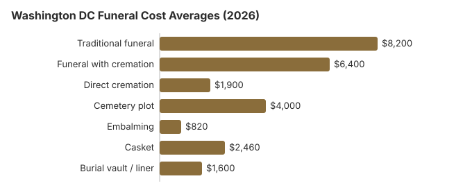

Funeral Costs in Washington, DC (2026)
Knowing real Washington DC funeral costs before you walk into a provider changes the conversation. This guide lays out what families here actually pay in 2026, how Washington DC prices compare to the rest of District of Columbia, and which line items have the most room to move.
Complete Average Funeral Cost Breakdown for Washington DC
The following table breaks down average funeral costs in the Washington DC metropolitan area compared to Virginia averages. As a quick benchmark, Washington DC prices run from a $1,945 median for direct cremation to $8,023 for a funeral with a casket, before any cemetery costs. The $1,945 direct cremation median and $750 embalming median come from the DC Attorney General funeral home price survey (August 2017); the $8,023 and $6,103 funeral figures are South Atlantic medians from the NFDA 2023 General Price List Study, as tabulated by Choice Mutual, and the $5,252 plot and $1,204 liner are from the St. Paul’s Rock Creek Cemetery 2025 price list. The headstone range and Virginia column are our estimates.
| Service | Washington DC | Virginia Avg. (our estimate) |
|---|---|---|
| Traditional funeral | $8,023 | $8,200 |
| Funeral with cremation | $6,103 | $6,400 |
| Direct cremation | $1,945 | $1,900 |
| Cemetery plot | $5,252 | $4,000 |
| Embalming | $750 | $820 |
| Casket | Included in the $8,023 | $2,460 |
| Burial vault / liner | $1,204 | $1,600 |
| Headstone / marker | $1,500 – $3,500 | $1,000 – $3,000 |

Understanding Washington DC Funeral Pricing
Funeral home prices in Washington DC are not far from those across the river in Virginia. Cemetery land is where the District costs more, because a dense city has little of it to sell. However, the competitive market in Washington DC also means you have more providers to choose from. With around 40 funeral homes available in Washington, DC, it makes sense to compare funeral services and use specific criteria when shopping around, which gives you leverage when comparing prices.
The most effective way to find the best price is to request General Price Lists from 2 to 3 funeral homes in the Washington DC area and compare them line by line using a structured funeral price comparison process. Under the FTC Funeral Rule, every provider must give you this list upon request (no appointment needed, no commitment required), and any third-party fees found there cannot be marked up by funeral homes in Washington, D.C.
Frequently Asked Questions
What are funeral costs in the Washington DC area?
Washington DC funeral pricing centers on an $8,023 traditional-funeral median: a little under our $8,200 Virginia estimate. The median direct cremation in Washington DC is $1,945, according to the Attorney General's survey. Expect totals from $1,945 at the low end to $20,063 for a full burial with all line items included.
Is cremation or burial more common in Washington DC?
We found no published cremation rate for the District itself; nationally, NFDA projected that 63.4% of U.S. deaths in 2025 would end in cremation, according to its 2025 Cremation & Burial Report. Cremation is the cheaper route here, with a $1,945 median for direct cremation against $8,023 for a funeral with a casket, before a plot that starts around $5,252. Many Washington DC families choose cremation to reduce costs while still holding a meaningful memorial service.
Is Washington DC more or less expensive than the US average for funerals?
Slightly less. The $8,023 South Atlantic median used for DC is just under the $8,300 national median. Where DC costs more is the cemetery: a plot at St. Paul's Rock Creek starts around $5,252. Comparing providers in Washington DC aggressively, or choosing direct cremation, is the reliable way to push costs down.
What is the best way to compare Washington DC funeral homes?
Start with GPL requests; the federal Funeral Rule gives you the right to an itemized price list from any Washington DC funeral home, on demand. Call or email two or three providers. Parting.com provides aggregated Washington DC price data, and the Funeral Consumers Alliance publishes independent comparison tools.
What is direct cremation in Washington DC and how much does it cost?
Direct cremation is the most affordable option in Washington DC. The Attorney General's 2017 survey put the median at $1,945, and the 2024 and 2025 price lists we checked run from $970 (Heaven Bound Cremation Services of D.C.) to $2,417.88 (Stewart Funeral Home). The Medical Examiner charges $75 to approve each cremation, and some homes fold that into their price. It includes transportation to the crematory and return of ashes without a viewing or ceremony. Families can hold a separate memorial service at a later date, often at a fraction of the cost of a traditional funeral.
What are the cheapest funeral choices in Washington DC?
Washington DC has several affordable paths. Direct cremation at $1,945 is the cheapest disposition. Direct burial (no viewing or ceremony) is the cheapest burial. Memorial-only services at a venue you choose sidestep funeral-home facility fees. Independently purchased caskets often cost less. And veteran benefits, Medicaid assistance, and crowdfunding can close remaining gaps.
More in District of Columbia
Who Owns Funeral Homes in DC
Ownership is worth checking in the District as anywhere: some funeral homes are independent and others belong to national chains, and that can show up in the price. The NFDA lists ownership status in its directory, and it is worth checking when you are comparing providers in DC, especially if you are also using a funeral cost calculator to compare cremation, burial, and service prices.
Cremation vs. Burial in Washington DC
Direct Cremation in Washington DC
- Range of direct cremation prices in the DC Attorney General’s survey; the median was $1,945
- Cremation with service from $6,103
- No cemetery plot needed
- Memorial service can be held anywhere
A typical cremation service in Washington, DC costs around $6,103, which is a different type of arrangement than direct cremation. NFDA’s 2025 Cremation & Burial Report projects a 63.4% national cremation rate for 2025, so many families look at this option first.
Burial in Washington DC
- Traditional service: the basic services fee had a $2,125 median in the DC Attorney General’s survey
- Cemetery plot from $5,252
- Vault or liner: many cemeteries require an outer burial container or vault
- Permanent memorial location
Embalming is not required by DC law, and a funeral home may not embalm without written authorization from the next of kin (DC Code § 3-408(a)(9)).
Your Rights in Washington DC
Ways to Reduce Costs in Washington DC
- Compare prices from at least 3 funeral providers in the Washington DC area
- Consider direct cremation at $1,945 as the most affordable option.
- Shop for caskets from independent retailers or online; prices are often lower. Best online casket retailers
- Ask about veteran benefits, Medicaid assistance, or payment plans; the D.C. Department of Human Services closed its Burial Assistance program for low-income residents on September 30, 2025, so call the DHS Economic Security Administration at 202-727-5355 to learn which other District benefits still apply, especially if you are planning a funeral with no insurance coverage. See all assistance options
- Consider a memorial service at a church, park, or home instead of the funeral home
- Review our affordable funeral options guide for more strategies
- Learn how to pay for a funeral with no money if finances are tight
- Use our cost comparison worksheet to organize quotes from different providers
Funeral Home Hidden Fees to Watch For in Washington DC
Many families in Washington DC encounter unexpected charges. Watch for these common hidden fees:
- Casket handling fees: Illegal under the FTC Funeral Rule, but some providers still add them
- Package markups: Bundles often include unnecessary services.
- Weekend/holiday surcharges: Can add 15–25% to the total cost
- Documentation fees: Death certificates in D.C. cost about $18 for the first copy, but death certificates and permits can still add $200–$600
Educational Resources
- Payment Assistance GuideGovernment programs and financial help for funeral costs
- Best Burial Insurance CompaniesSide-by-side comparison of top burial insurance providers
- FTC Funeral RuleThe federal rule protecting funeral consumers
- Funeral Insurance GuideCompare final expense and burial insurance options
- Insurance Plan ComparisonCompare coverage, premiums, and payout speed across providers
- Funeral Consumers AllianceIndependent nonprofit consumer advocacy for funeral rights
Compare Funeral Costs
- Average Funeral Cost in 2026National cost breakdown with real prices
- Direct Cremation: Most Affordable OptionNFDA 2023 median $2,645 with a family-supplied container (latest available)
- Cremation vs. Burial Cost ComparisonSide-by-side price comparison to help you decide
- Funeral Cost BreakdownEvery line item explained: know what you're paying for
- How to Compare Funeral PricesStep-by-step guide to getting the best price
- Cheapest Funeral OptionsLower-cost alternatives, with typical price ranges
Compare: Washington DC vs. Virginia
Here is how Washington DC compares with Virginia:
| City | Traditional Funeral | Direct Cremation |
|---|---|---|
| Washington DC | $8,023 | $1,945 |
| Virginia | $8,200 | $1,900 |
At $8,023, Washington DC sits close to our $8,200 Virginia estimate and just under the $8,300 national median. Direct cremation prices in the District vary widely: the Attorney General’s 2017 survey found $700 to $6,800, and current lists from Heaven Bound (2024) and Stewart Funeral Home (2025) start at $970 and $2,317.88. Cremation approval from the DC Medical Examiner costs $75. Regardless of location, comparing at least 2-3 providers before committing can lower costs significantly.
Funeral rules and help in Washington, DC
If a funeral home in DC refuses to show prices or pressures you, the licensing body is the DC Department of Licensing and Consumer Protection (DLCP), Occupational and Professional Licensing, reachable at 202-671-4500.
The Funeral Consumers Alliance does not list DC among the nine states that require a funeral director for parts of after-death care, so a DC family may arrange much of a funeral itself. The DC death certificate and disposition permit still have to be filed.
Cremation timing: DC sets no fixed waiting period before cremation, but a permit is needed first (D.C. Code § 7-231.17).
The District's Department of Human Services ended its Burial Assistance program on September 30, 2025, so DC no longer pays toward a funeral for low-income residents; the DHS Economic Security Administration's public benefits line, 202-727-5355, can say which remaining benefits a family may still have. (Source: DC DHS Burial Assistance notice.) The $255 Social Security lump sum goes only to an eligible spouse or child and must be claimed within two years; it does not go to the DC funeral home.
Veterans can be buried at no cost for the grave in a VA national cemetery, but the only VA site in the District, the Congressional Cemetery government lots, is closed, so the closest VA-run option is Quantico National Cemetery in Virginia. The Army runs Arlington, in Virginia, and the Soldiers’ and Airmen’s Home National Cemetery, in the District; most veterans with honorable service qualify for above-ground inurnment at Arlington National Cemetery, but in-ground burial there has stricter rules. A DC funeral home books a VA grave through the National Cemetery Scheduling Office (800-535-1117).
Next steps for a funeral in DC
- Ask every DC funeral home for its General Price List; the FTC Funeral Rule says it must give you one when you ask in person.
- Ask the DC funeral home whether embalming is actually needed for your plans.
- Do not count on District money for a DC funeral: DHS Burial Assistance closed on September 30, 2025. Call the Economic Security Administration at 202-727-5355 about other benefits.
- Report a funeral home that hides or ignores its price list to the board at 202-671-4500.